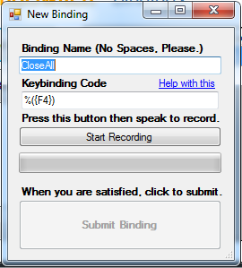

This page contains all content for my evidence portfolio, which was made as part of the Project 2 paper in my third year at Otago Polytechnic.
Now that this project is reaching some sort of closure, I’m going to talk about what I feel went well, what went poorly, and all the in-betweens. Before I get into the finer points, I want to say I’ve had a fantastic time working on this project in my final semester. We hit our stride, quickly overcame problems, and built a more-or-less fully functioning program by the end. Our first semester was very difficult – we were swimming in unfamiliar waters. No audio experience, and minimal experience with thinking outside of a set of the code guidelines provided by assignments. I found this semester to be a very rewarding problem-solving experience, and I’m surprisingly proud of the end result.
First up, what I feel went well. We came into the second semester after taking a short break from actively working on the project, and we were aware of our now limited time to produce something for a user. We decided to begin actively fleshing out the user-facing GUI for our final application, as well as the code on the back end that would facilitate the reading and matching of audio. Both Leonard and I put in a great deal of work to get this initial prototype going, and it did – sort of. Through some long days and a huge amount of google & teamwork, Leonard and I managed to get a real working prototype. I feel our teamwork really shone this semester, we communicated constantly and actually began really enjoying the time we were investing into our project. Both of us were involving in every major decision step of our project, and the result came out great.
The poorer parts of my project experience are more entrenched in the first semester of project. I found it very difficult to understand all of the moving pieces that would be required to make our project plan a reality. And as I mentioned earlier, neither me nor Leonard had any experience with audio files and we lacked confidence with languages other than C# / Web. We had one particular time where neither of us wanted to work, and we felt stuck in a rut for about 2 weeks wherein nothing was achieved. I still feel bad about this, but as soon as the second semester started we made a great comeback. My biggest problem was finding a direction to run in for this project, as well as overcoming the initial burnout while we were still planning our project and trying to find libraries or tools to offload the overly complex parts of our assignment, such as actually developing a tool to compare the similarity of two sound files.
In conclusion, our project had a very rocky start, due to my lack of direction and much uncertainty of how viable the end result would actually be. However, as soon as I had even a semblance of a direction and a plan, work speed and progress increased rapidly. I loved being able to solve the interesting problems this project provided, from things like culling ambient noise, to storing bindings between runs, and to fine-tuning the optimisation of those bindings to increase their execution speed. Leonard and I worked extremely well together, and that teamwork and pacing between the two of us made this project very fun to develop.
This section has a few interesting code snippets that I wrote as part of this project.
Best-Match-Bind finding
I feel this bit of code is quite interesting due to the surrounding architecture that facilitates it.
Each cycle over the for loop, we call an instance of a class I wrote called executor which
handles running seperate processes (a lot of these are CMD processes) and sending in commands to it via a function call.
The ExecuteCommand(string) function returns the cmd output of whatever command it is passed. In this case, cmd is running an executable
that compares our two .wav files, and asseses how similar they are as a scalar value. We save that value, and eventually the entire method returns what it
determines as the most accurate match for a heard voice command.
public Binding compareUnprocessed()
{
//Loop over each stored binding and execute the compare script on each of them.
for (int i = 0; i < bindings.Count; i++)
{
//Build the command we wish to send to the overlap-analysis executable.
string commandToExecute = pathToScript + " " + bindings[i].pathToWav + ".wav " + pathToUnprocessed;
//Pass the command to the executor instance, and retrieve the result as a double (for comparison).
compareResults[i] = Convert.ToDouble(executor.ExecuteCommand(commandToExecute));
}
//Find the index which holds the highest value in the array
double bestMatchValue = Convert.ToDouble(compareResults.Max());
int bestMatchIndex = Array.IndexOf(compareResults, bestMatchValue);
if (bestMatchValue < ProgramSettings.quality)
{
return null;
}
else
{
return bindings[bestMatchIndex];
}
}
Existing Bind Loading
We had an interesting problem relating to the persistence of our
bindings. And I came up with an interesting solution. For a binding
to exist, it only needs an identifier as a name, and a command to execute
in addition to the sound file itself. So, why not store both the name
and the command as the name of the .wav file? When the program is started up,
it searches the program directory for .wav files, and rebuilds the files it finds as
clean bindings if the filename matches our guidelines.
for (int i = 0; i < dirs.Length; i++)
{
//Get relevant path splits at certain characters
int posSlash = dirs[i].LastIndexOf("\\") + 1;
int posUnderscore = dirs[i].LastIndexOf("_");
int posLastPeriod = dirs[i].LastIndexOf(".") - 1;
//Create intermediaries that store the substrings of the split path.
string newBindName = dirs[i].Substring(posSlash, posUnderscore - posSlash);
//Filter out the unprocessed file from the newbind list.
if (newBindName != "unprocessed")
{
string newBindAction = dirs[i].Substring(posUnderscore + 1, posLastPeriod - posUnderscore);
//Create a new binding from these intermediaries.
bindings.Add(new Binding(newBindName, newBindAction, true));
}
GUI Layout
Although there is code involved here, the code itself isn't very interesting.
But the approach I used for the design of the GUI is quite interesting.
We didn't want a cumbersome, unwieldy design as usability was very important to us,
especially given the potentially limited motor-function of our target audience.
The entire app (save for 1 form) takes place on the same form, using stacked panels that
show/hide as needed. I did this to keep persistence and scope of all the working parts
of our program at once, without having to awkwardly pass instances between different form instances.
The end result makes pre-loading certain pieces of information much easier, and lets the user
move around screens seamlessly without having to turn listening off or reset their audio device.
Additionally, the one seperate form we do have is the form for creating a new binding. Again, the code behind the form itself doesn't do much thats very interesting, but the design had to try and be sensible and avoid being overbearing for the user - this dialog went through a few iterations before we agreed to settle on what you see below, previously, whenever people used it, they found the window quite confusing and weren't really sure what the program was after. I hope I remedied it with this UI.
